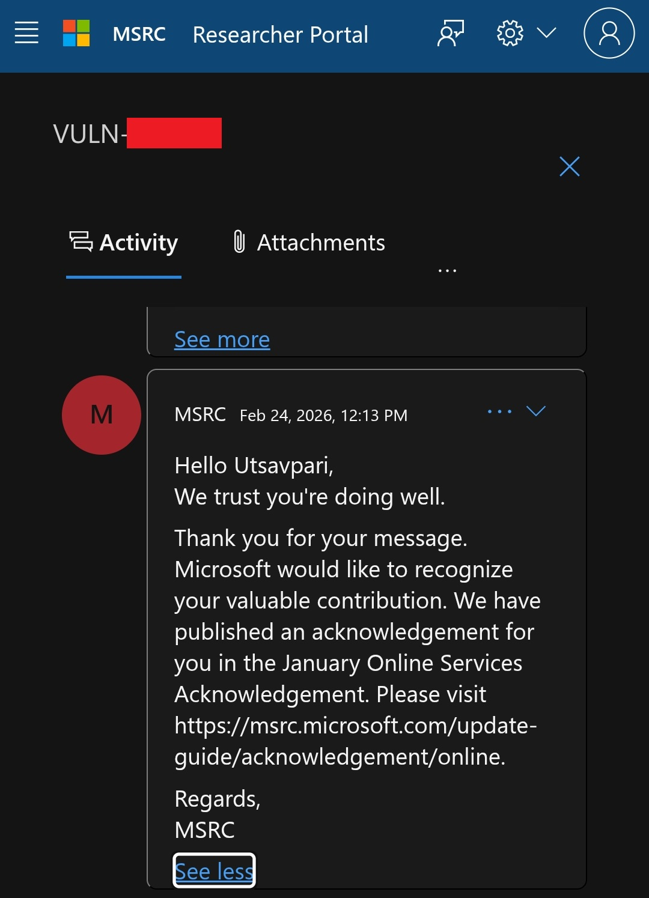
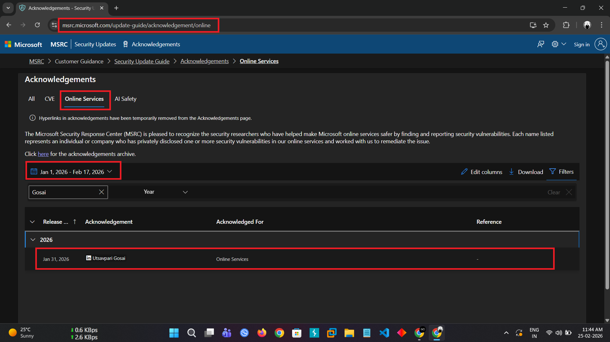

Hello Hackers 👨💻🔐

I hope you all are doing well and continuing to secure our digital landscape 🌍✨
Today, I want to share the story of how I made it to the Microsoft Hall of Fame 🏆🚀 Let’s get started!
🔍 The Discovery
Due to responsible disclosure policies 🔒, I cannot disclose the exact vulnerability. However, I can share the methodology and mindset that helped me during the process.
Microsoft allows security researchers to hunt for vulnerabilities in their GitHub repositories within a defined scope. While exploring one of their repositories, I discovered a sensitive key exposed directly in the code 🔑
After verifying and validating the finding carefully, I responsibly reported it through Microsoft’s Vulnerability Disclosure Program 📩

After proper review and remediation, I was recognized in the Microsoft Hall of Fame 🏆
Hall Of Fame: https://msrc.microsoft.com/update-guide/acknowledgement/online

🤖 Automated Tools vs Manual
There are many automated tools and keyword-based scanners available online that help in identifying sensitive information in public GitHub repositories 🔍🤖
These tools can significantly speed up your reconnaissance process.
However, I personally recommend combining automated scanning with manual testing 🧠💻
Sometimes automated tools miss contextual leaks that only a careful human review can detect. Manual analysis helps you understand the logic, flow, and intent behind the code.
The combination of automation + human intelligence increases your chances of finding valid, impactful vulnerabilities.
🛡️ Responsible Disclosure Matters
Always follow responsible disclosure practices. Never exploit vulnerabilities for personal gain. The goal is to make the digital ecosystem safer for everyone 🌍🔐
Ethical hacking is about responsibility, patience, and integrity.
🔥 Tips for Fellow Bug Hunters
- 🔎 Explore repositories within defined scope carefully.
- 🤖 Use automated tools for faster reconnaissance.
- 🧠 Perform deep manual code reviews.
- 📩 Always report findings through official disclosure channels.
- ⚖️ Respect program policies and stay ethical.
🙏 Gratitude
I would like to give a very special thanks to The Biggest Hacker of This Multiverse, Shiva 🕉️, my best friend K3$#!V@ 🧿💙 and my family ❤️ who supported and believed in me throughout this journey.
Your encouragement means everything!
I hope this story motivates fellow hunters in their journey 🛡️🔥
If you have any questions, feel free to reach out through the link provided in my Linktree.
Thank You,
MR. X FACTOR
🔗 Handles:
- Linktree: https://linktr.ee/mrxfact0r_99